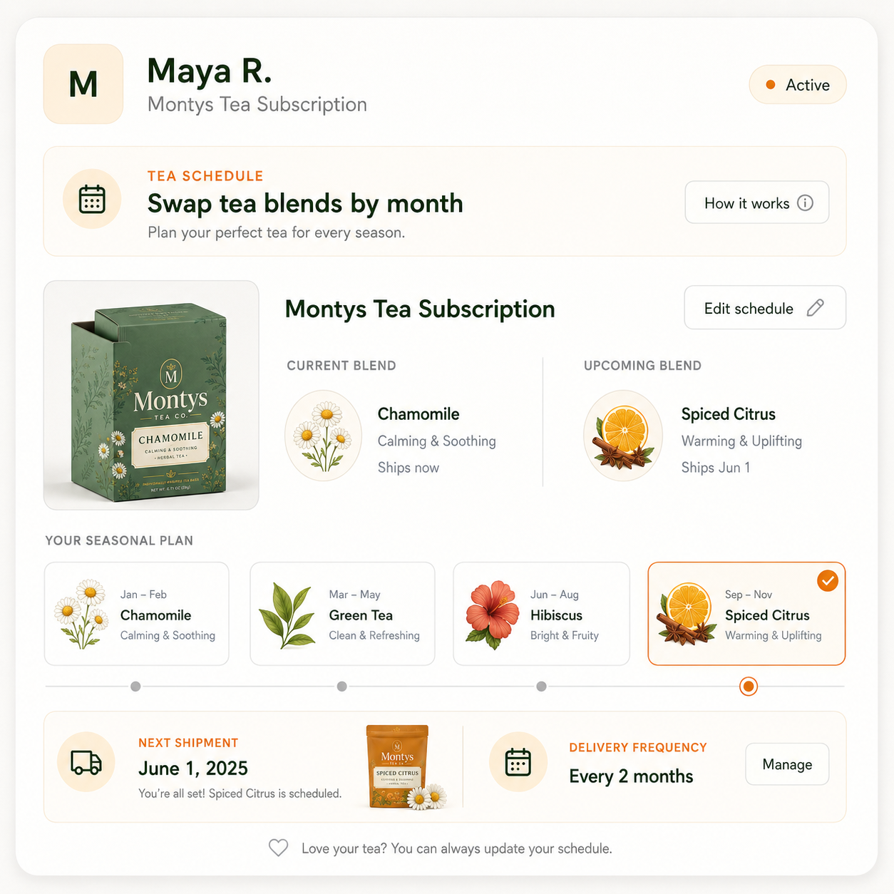
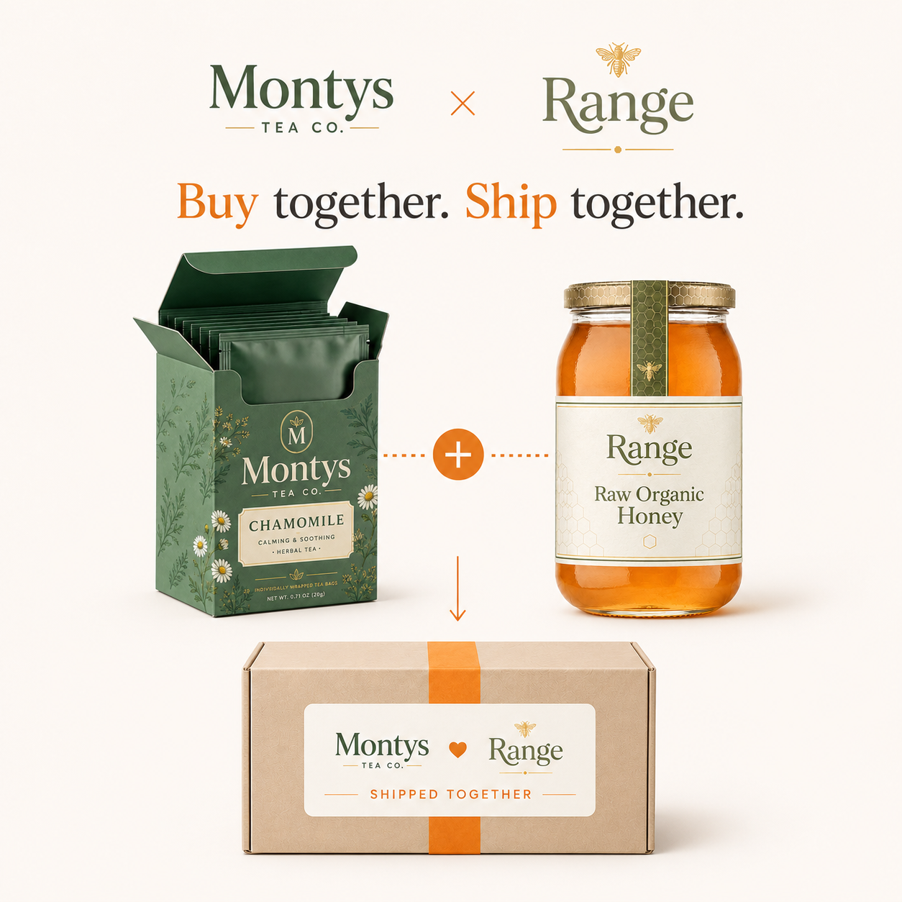
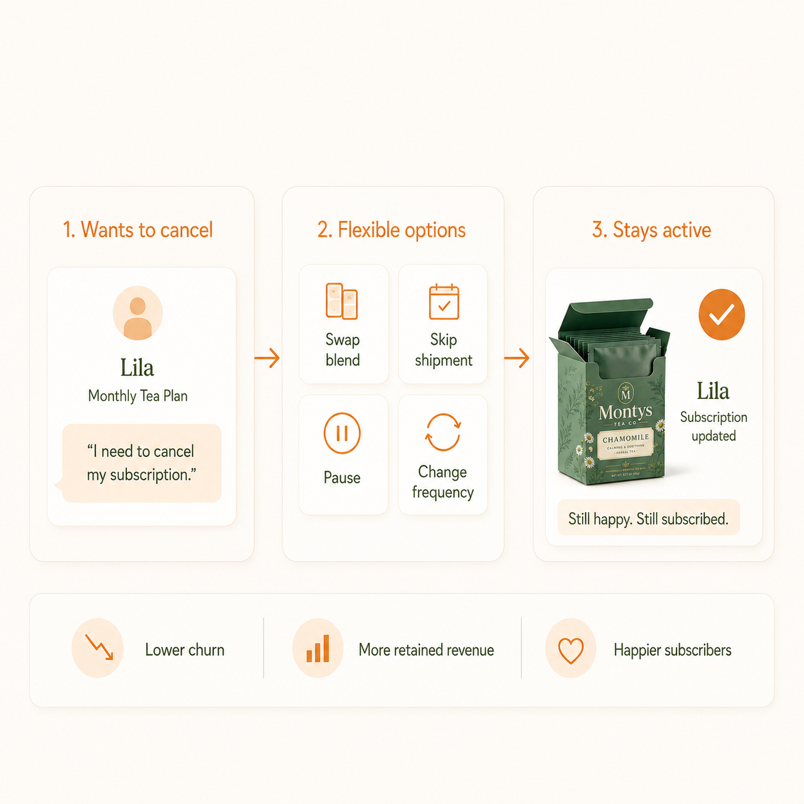

Your Customers' Pantry Changes With the Season. Their Subscription Should Too.
Inside how food and beverage brands use Rebillia to keep subscribers active through every flavor, bundle, cadence, and payment change.
One subscription that flexes with every flavor, cadence, and gift.
A tea blend that felt perfect in January may not be what a customer wants in July. A coffee subscriber may have too much product at home after vacation. A wine club member may want to add a gift bottle for the holidays. A snack-box customer may want a different flavor, a smaller shipment, or a one-time add-on before the next renewal.
Food and beverage subscriptions are personal, seasonal, and consumption-based. They do not move on a perfect calendar. Most subscription systems still behave like they do.
That is the quiet reason repeat-purchase brands lose subscribers who never stopped liking the product. The customer did not stop drinking the tea, using the olive oil, eating the snack, or gifting the box. They just needed the subscription to flex before the next shipment, and the system made that harder than cancelling. Rebillia was built to close that gap.
Billing Built Around the Parts That Actually Change
Instead of treating a subscription as one fixed product on one fixed interval, Rebillia breaks it into independent parts: product, quantity, cadence, price, payment method, and customer preferences. Each part can be adjusted mid-subscription without cancelling, recreating the order, or losing the customer's history.
A subscriber can swap a flavor, slow down for a season, skip a shipment, add a one-time item, update a card, change an address, or move into a different bundle while the underlying subscription stays intact. For food and beverage brands, that turns subscription management from a support burden into infrastructure that protects the customer relationship through the normal changes that used to end it.
Each part adjusts on its own, no cancel, no rebuild.
How a Tea Brand Puts This Into Practice
A tea brand is a classic repeat-purchase food and beverage business, with a catalog built around habit, taste, gifting, and refill behavior: black tea, green tea, chai, chamomile, Earl Grey, jasmine green, lemongrass, mint, oolong, white tea, samplers, gifts, and related products.
Tea is a natural subscription category because the product is used repeatedly, but it is not static. A subscriber may want chai in the winter and mint in the summer. They may want a sampler before committing to a new blend. They may need a slower cadence when they have too much at home, or a larger refill when a product becomes part of their daily routine.
For a brand like this running subscription commerce on Rebillia, the value is not only processing recurring payments. It is keeping the subscriber active when their buying behavior changes.
Subscriptions as fresh as the product
Picture a subscriber who starts on a chai blend, tries a sampler in the spring, switches to mint and skips a box in the summer when they have too much at home, and adds a gift box in the fall. Each of those is a reason people cancel rigid subscriptions. On Rebillia they are adjustment moments instead: swap the blend for the next shipment, skip or slow the cadence, add a one-time gift, or change an address, all while billing continuity and customer history stay intact and the subscription keeps running.

The Same Pattern Shows Up Across Food and Beverage
Tea is not the only food and beverage fit for this message. Wine clubs let subscribers adjust their selection as the seasons change. Olive oil brands let customers sample different oils before committing to a standard. Snack brands run subscriptions with flavor rotation. Popcorn brands specialize in seasonal flavors with flexible cadence needs. Confectionery brands let customers upgrade, downgrade, or add one-time gifts.
All of these brands run subscriptions on Rebillia. The point is not name-dropping. The point is that Rebillia already serves the category where recurring revenue depends on what happens after the first subscription order: the next flavor, the next shipment, the next gift, the next payment update, and the next moment when the customer needs the plan to change instead of end.
The subscription adapts at every step, the customer never cancels.
Better Together: Build Subscriptions Across Brands
Two complementary brands, like a roaster and a creamery, sell one joint subscription, one box, one checkout. Each keeps its own catalog, pricing, and payouts, for a bigger basket with no custom integration.

The Subscription Moment That Changes
| Subscriber moment | Rigid subscription workflow | Rebillia workflow |
|---|---|---|
| Wants a different flavor or blend | Cancels the current plan, restarts with a new SKU, or waits on support to rebuild the subscription. | Swaps the product for the next shipment while preserving customer history, billing continuity, and renewal cadence. |
| Has too much product at home | Cancels because the fixed schedule no longer matches real consumption. | Skips the next shipment or slows the cadence, then continues when the customer is ready. |
| Wants a seasonal bundle or one-time add-on | Uses a separate checkout or manual workaround that does not connect cleanly to the subscription. | Adds the one-time product or bundle to the next recurring shipment while keeping the subscription intact. |
| Needs a gift, address change, or temporary pause | A simple request turns into a support ticket or cancellation risk. | Updates the address, pauses, skips, or adjusts the shipment inside the existing subscription. |
| Payment method fails or needs updating | Gateway and subscription logic sit in separate systems, creating cleanup and interruption risk. | Payment and billing logic stay connected through RebilliaPay so the customer can update the payment method and billing can continue. |
Turn cancellations into opportunities
Food and beverage subscribers rarely cancel because they stopped liking the product. They cancel because they have too much at home, their taste shifted with the season, or they wanted to skip a box, and the system made changing harder than leaving. In a consumption-driven category, a rigid subscription turns every ordinary change into a churn risk. Rebillia makes flavor, quantity, cadence, and payment independent parts a subscriber can adjust in seconds, so the moments that used to end a subscription keep it running instead.

For Food and Beverage Brands
Subscriptions fail in this category for a specific, fixable reason: the system cannot keep up with how customers actually consume, gift, restock, and change preferences over time.
A brand does not need to lose a subscriber just because the customer needs a different blend, a slower refill, a seasonal bundle, a skipped shipment, or a new payment method. Those are not cancellation moments. They are adjustment moments.
"Legacy systems manage subscriptions. Rebillia manages subscription behavior."
Ready to Grow Your Recurring Revenue?
If your subscription cannot handle a flavor swap, cadence change, one-time add-on, pause, skip, or payment update without pushing the customer toward cancellation, talk to us about what that could look like for your brand.